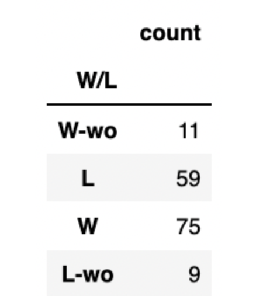
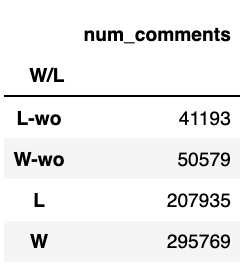

Project
Introduction
Project's subjects and big data tools introduction.
New York Yankees
The New York Yankees are an American professional baseball team based in the New York City borough of the Bronx.Arguably the most successful professional sports team in the United States and one of the most highly regarded, the Yankees have won 19 American League East Division titles, 40 American League pennants, and 27 World Series championships, all of which are MLB records. The team has won more titles than any other franchise in the four major North American sports leagues, after briefly trailing the NHL's Montreal Canadiens in the 1990s.
Registered users (commonly referred to as "Redditors") submit content to the site such as links, text posts, images, and videos, which are then voted up or down by other members. Posts are organized by subject into user-created boards called "communities" or "subreddits". Submissions with more upvotes appear towards the top of their subreddit and, if they receive enough upvotes, ultimately on the site's front page. Reddit administrators moderate the communities.
Spark for Big Data
In the project, we applied Pyspark to analyze the dataset.Apache Spark™ is a multi-language engine for executing data engineering, data science, and machine learning on single-node machines or clusters.
Pushshift Reddit API
Pushshift is a social media data collection, analysis, andarchiving platform that since 2015 has collected Redditdata and made it available to researchers.Pushshift’s Redditdataset is updated in real-time, and includes historical databack to Reddit’s inception.
Databricks
In the project, we used Databricks for our big data analysis.A data lakehouse unifies the best of data warehouses and data lakes in one simple platform to handle all your data, analytics and AI use cases. It’s built on an open and reliable data foundation that efficiently handles all data types and applies one common security and governance approach across all of your data and cloud platforms.
Introduction
Reddit is a social media website in which users can post text, links, and other forms of media about a variety of topics into different communities called "subreddits." With over 50 million unique visitors daily and 100 thousand active subreddits, Reddit is a popular medium through which many people engage with news, politics, and a myriad of other topics. The realm of sports is no exception, as subreddits surrounding sports related topics have over 30 million subscribers in aggregate. For many fans, Reddit is the primary platform through which they keep up with their favorite sport.
Professional sports leagues and organizations are constantly trying to increase their fan engagement. The MLB's institution of numerous rule changes over recent years is a prime example of a sports organization devoting a significant amount of resources in an attempt to increase viewership. Given that many fans utilize Reddit to follow sports, it would be worthwhile for leagues to investigate what kinds of sports posts seem to be captivating their viewers attention. By understanding the Reddit landscape and why certain types of posts are popular, these sports organizations could potentially better cater to their fans' interests. For the first portion of our project, we attempted to explore this area by analyzing what factors impact post engagement and popularity within sports related subreddits.
In addition to keeping up with a sport as a whole, many people use Reddit to follow and discuss their favorite team specifically. Popular sports teams often have subreddits with thousands of subscribers who interact with one another and discuss topics related to their team. The majority of these subreddits also host live game threads in which fans can post comments about a game in real time. Games with large viewership often have game threads with hundreds of upvotes and thousands of comments. The Astros/Phillies World Series game 6 thread, for example, garnered 270 upvotes and 7,746 comments.
Like the leagues as a whole, individual teams are also constantly trying to increase their fan engagement. Analyzing comments of game threads would be a valuable way for these organizations to understand fans' live thoughts and reactions to their team's gameplay. This additional understanding would likewise enable teams to better cater to fans' interests and take measures to improve their organization accordingly. After providing analysis on the topic of sports as a whole as mentioned above, we dove into a more specific team-based analysis to explore this topic. To do so, we utilized comments from Yankees game threads in the 2021 season as a case study. We found this a valuable addition to our analysis as we were able to explore sports topics at both a broad level and through a specific example.
Below, we listed our original business goals along with the technical plans. We will demonstrated the specific goals in each analysis.
- Are certain types of media more present within popular posts?
- Do popular posts have a higher amount of crossposts into other subreddits?
- Does having previously successful posts impact the likelihood of having another successful post?
- Does ad status influence the popularity of a given post?
- Do gilded posts receive higher scores on average than non-gilded posts?
- What are the distributions of the submission post time of different subreddits? Are there any differences among them? Does score vary with time of posting?
- Compare the distribution of positive and negative comments between two sports reddits. Can we extrapolate from these results to draw conclusion about the subreddit, or even the sport, overall?
- Does sentiment vary with time of posting a given comment?
- Are posts more popular for athletic teams who are performing well?
- Using various metrics, can we build a model to accurately predict the score of a post?
Technical Proposal: For a given sports subreddit, utilize regex with the has_media field, the url field, and other fields to identify if posts have different types of associated media (i.e. photos, videos, etc.). Then, see if these posts on average are more or less popular. Utilize 'score' as the primary metric to measure popularity.
Technical Proposal: For a given sports subreddit, find if posts with many cross posts are more or less popular on average utilizing score as the metric for popularity.
Determine if there is a correlation between a post's score and the number of crossposts that the post receieved.
Technical Proposal: Create a new field measuring aggregate user score over time.
Evaluate whether the aggregate score by user is correlated with the score of a given post.
Technical Proposal: Determine if the ad status (indicated by `whitelist_status`) is correlated with visibility. Utilize the score metric as a proxy for visibility.
Technical Proposal: Correlate the gilded count field with the score field. Evaluate if this correlation is signficant.
Technical Proposal: Create two new fields based on the `create_utc` field of the submission data for at least two subreddits. One of the fields can be the time of the day, while the other is the day of the week. With these two fields, obtain counts to find the distribution of the submission number of each time slot and each day of the week.
Technical Proposal: Do sentiment analysis to determine positive/negative sentiment on a subreddit. Repeat the process for a different subreddit. Evaluate the ratio of positve to negative responses between the two subreddits.
Technical Proposals: Within a given subreddit, capture the sentiment of each comment. Group these comments into different time slots. Then compare the number of positives, negatives, neutral between the different time slots.
Technical Proposal: Using external data (W/L records of athletic teams within time period), correlate activity within a given teams’ subreddit (number of submissions within time period) to success.
Technical proposal: Using the fields listed under the submissions data, create an ML model to predict the score. In addition, the fields created in EDA showing high correlation with score or comment number, such as submission posting time, will also be included in the features.
Exploratory
Data Analysis
Yankees’ subreddit game threads from the 2021 season with external data
Exploratory data analysis (EDA) is an approach of analyzing data sets to summarize their main characteristics, often using statistical graphics and other data visualization methods.
Executive Summary
We explored a variety of questions surrounding activity within sports subreddits and came away with a few key findings. We examined first which factors influence post popularity utilizing the NBA subreddit, and found that the number of crossposts a post received and its gilded status were moderately associated with its score. We also looked at the time of posting within both the NBA and NFL subreddits, and found that the amount of submissions posted and the average upvotes differed fairly significantly depending on the time of day and time of the week. Time of the year for post submission also had significant variations. Unsurprisingly, post frequency peaked in the beginning of the season (August) and end of the season (June) for the NFL, while post frequency shot up significantly during January and peaked around the playoffs (June) for the NBA. We also found that NFL teams with better performing teams and larger fanbases tended to have a larger subscriber count with their respective subreddit. While each of these findings proved interesting on their own, the main overall takeaway seems to be that there is a lot of valuable information to be found about general trends and fans’ interests for sports subreddits. Sports teams and organizations could gain significant value by diving into these questions to better understand what factors lead to increased engagement.
{kind=link}
Analysis Report
Knowing we wanted to explore what makes for a popular post in sports subreddits, we selected two sample subreddits to examine features contained within the pushshift reddit dataset that we thought might have an influence on popularity. We focused simply on posts within the NBA subreddit to begin with and selected “score” as our measure of popularity. Score measures the total amount of upvotes minus downvotes a post received, which is a good indicator of whether a significant amount of people found value in a given post. We first examined the distribution of scores for all posts and found they were heavily skewed to the left. We then created another subset of data containing only posts with scores greater than 500. This subset of data was not as left skewed, but only slightly.
{kind=link}
{kind=link}
We then conduct our analyses on both of these data subsets. We examined the following five questions:
Is the number of crossposts is correlated with score?
How much the url linking to a video influenced the popularity of a post?
Is the time of posting is relevant to its popularity?
Do gilded posts tended to be more popular?
Are users who have had popular posts in the past are more likely to have popular posts in the future?
For each question we isolated the necessary dataset, created dummy variables and conducted data transformations where needed, measured the Pearson correlation with “score,” and created visualizations to demonstrate the findings. For a full review of the results and work done, you can view our notebook here. Some of our more interesting results included that aggregate post score for the author of a given post was weakly correlated with score for that particular current post. In other words, past success was a slight predictor of current success for the author of a post. Regarding our question about video links, while we hypothesized that posts with videos would receive more impressions and thus higher scores, the Pearson correlation did not confirm this hypothesis. Finally, we saw that gilded status was heavily correlated with post performance. A gilded status can be obtained by paying for the “gilded” badge which is then awarded to a post. It is our hypothesis that most posts with this status received it after becoming very popular, though we will need to investigate further to confirm. We also conducted some basic analysis based on the time in which a post was submitted. We found that posts submitted on the weekend received a slightly lower average score than those submitted on the weekday, and posts during the fall received the highest average score on a seasonal basis.
{kind=link}
{kind=link}
{kind=link}
After completing this analysis, we decided to switch sports and instead examine the NFL.The question we aimed to explore was if teams that have performed historically well generally had larger corresponding subreddits. To measure this, we curated a list of NFL subreddits, grouped by submission count, and then generated a bar graph of all the teams in ascending order. While in general more historically successful teams seemed to have higher subscribers, there were some notable exceptions. The Cowboys low number of subreddit subscribers despite them having the largest fanbase out of any NFL team, as well as the lions having a high amount of subscribers despite their absolutely horrendous performance over the past 20 years stood out as two notable exceptions. One possible explanation for this is that some NFL fan bases are loyal to their team despite poor performance. A more likely explanation, however, is that some of these teams’ subreddits were simply created at an earlier date, and hence were able to accrue a larger amount of subscribers over time.
{kind=link}
In our previous NBA analysis, we found that submission posting time may be related to the popularity of a post. This made us curious as to whether there are any differences about the distribution in times in which submissions were posted between sports. We compared the timing of posts between two subreddits, “NBA” and “NFL” to explore this question. The variable we used in this analysis was “created_utc,” which we converted from unix time to a Pyspark dataframe timestamp. We then extracted the time of day, day of the week, and month for further analysis. Figure 1 shows the comparison between NBA and NFL subreddits over the distribution of number of submissions across the time of the day. The distribution seems fairly similar here, however it is possible that NBA fans are active on reddit more in the night (when converting to Est time). For the day of the week, unsurprisingly, we see that there is more activity on Sunday and Monday for the NFL subreddit due to games being played on those days (Figure 9). This phenomenon would be even more exacerbated if the posts were isolated to the NFL season (Figure 10). As the NBA season is much more spread throughout the year than that of the NFL, the differences between the distribution of the number of submissions of NFL and NBA are not surprising. The NFL's posts reach a significant peak as the playoffs commence and the Super Bowl approaches. A similar phenomenon occurs in the NBA as the championships approach in June, but it is less pronounced and less skewed.
{kind=link}
{kind=link}
{kind=link}
Natural Language Processing
Yankees’ subreddit game threads from the 2021 season with external data
Natural language processing is a subfield of linguistics, computer science, and artificial intelligence concerned with the interactions between computers and human language, in particular how to program computers to process and analyze large amounts of natural language data.
Executive Summary
There were several key takeaways from our NLP analysis on the Yankees’ subreddit game threads for the 2021 season. First, we found that Yankees fans' comments within these game threads were often short in length with a high amount of emotionally charged words (particularly curse words). While not surprising, this finding reveals insight into how fans watch games and engage with their favorite team. Furthermore, we found there to be moderate difference in fan sentiment depending on whether the Yankees won or lost. While not as large as we originally thought it would be, this difference nonetheless demonstrates that sentiment analysis of reddit threads can more or less encapsulate the general feelings of the Yankees’ fanbase. We also found that Aaron Judge and Gary Sanchez were two players mentioned a significant amount of times within comments of these threads during the Yankees’ 2021 season. However, sentiment analysis revealed that while both players were frequently mentioned, comments about Sanchez were more likely to be negative than comments about Judge. Perhaps the Yankees and other franchises could analyze the sentiment of reddit comments mentioning their players as an additional metric to evaluate the impact these players are having on the fan experience.
{kind=link}
{kind=link}
Analysis Report
In our initial exploratory data analysis, our broad goal for the project was to analyze general Reddit trends. We picked sports as the subreddit category through which to analyze these trends and created several business questions specifically related to sports topics. However, as we began the natural language processing portion of the project, we decided it would be more valuable to produce analysis on a specific subset of sports data with a particular focus rather than attempting to address several broad questions. To pick a specific subset of data, we gathered game threads from the Yankees subreddit for games during the 2021 season. An example of a Yankees game thread can be found here. We then merged each of these game threads with external data about each particular game from baseball-reference.com. Our resulting merged dataset contained 154 game threads from the Yankees 2021 season with external data on the outcome of each game. Whe then merged this dataset with the comments for each game thread, resulting in a final dataset containing roughly 600,000 rows (~4,000 comments per game thread). The code used to produce this dataset can be viewed within our Data Gathering notebook. We then formulated specific business questions pertaining to this data, including:
Which words are most common within Yankees game threads, and what information might that yield about the subreddit or the team?
What players are most discussed within the Yankees subreddit/fanbase?
What is the sentiment surrounding those players, and what might that say about their popularity?
How does comment sentiment vary by game outcome?
For an initial overview of the data, we produced tables displaying the outcomes of these Yankees games, the total number of comments in each game thread by outcome, and the average number of comments of each game thread by outcome. It is important to note that in the outcome column, W-wo signifies a win with a walk-off, while L-wo signifies a loss with a walk-off. Interestingly, games with walk-offs had a higher average comment count than games without walk-offs, even in the case of a loss (Table 1). Perhaps this is due to the fact that the exciting nature of walk-offs leads to more overall comments. We also produced a graph displaying which Yankees games throughout the season had the highest number of comments in their corresponding game thread (Figure 13).
Table 1. Summary of game outcomes 2021 season.
{kind=link}
Table 2. Summary of total number of comments by game outcome.
{kind=link}
{kind=link}
{kind=link}
Figure 11. Distribution of game outcomes 2021 season.
{kind=link}
Figure 12. Distribution of total number of comments by game outcome.
{kind=link}
Figure 13. Distribution of average number of comments by game outcome.
We then performed natural language processing on all of the comments for each of these game threads. This processing included analysis on comment length, most mentioned words, and the most "important" words within each comment. The code can be found in our Yankees processing notebook. To begin processing the data, we first removed deleted comments from our dataset. We then found the word count for each comment by splitting the body of the comment into a string array using the space character to conduct the split. As displayed in figure 17, The distribution of comment length is right skewed, and the vast majority of comments are less than the average length of a sentence (15-20 words). This is to be expected, since comments during a game thread would likely be quick snippets of fans’ live reactions to the gameplay.
{kind=link}
Figure 15. Distribution of overall comment length.
To conduct analysis on the most mentioned words, we first tokenized the comments, removed non-text content (e.g. punctuation and emojis), and removed stop-words. We then generated word clouds to provide a visualization of the most mentioned words within our dataset (Figure 12). We can see there are a significant amount of emotional words such as “lol,” “lmao,” and a large amount of curse words. Notably, there are also several players’ names visible within the word cloud, such as “Sanchez'' and “Judge.” We also generated a separate word cloud specifically for the Yankees’ most popular game thread, the Yankees/White Sox game played on August 6th (Figure 18). In this word cloud, we similarly see a significant amount of emotional words as well as players’ names. One player name that is more noticeable within this word cloud is “Heaney,” potentially signifying that he played a major role in this game, leading to more mentions. These results answered our first business question, which was that emotional words and player names are common words used within Yankees game threads. We also answered our second business question by determining that Gary Sanchez and Aaaron Judge were two of the most discussed players on the team.
{kind=link}
Figure 17. Wordcloud of Yankees vs. White Sox game.
Given the fact that there was some variation in words mentioned between the word cloud of all of of the games vs. the word cloud of only the Yankees/White Sox game, we decided to perform TF-IDF analysis by game thread to explore which words were most important for each specific game. We observed several common words among each game in terms of importance, including “game,” “like,” and “get,” which unfortunately did not reveal any interesting information. However, we did observe some variation in the TF-IDF scores of player’s names depending on the game. This is to be expected, as certain players would be talked about more or less depending on how they played. Perhaps baseball franchises could utilize TF-IDF scores for players’ names to analyze the impact they have on the fan experience for each game. Given the fact that Gary Sanchez and Aaron Judge were two players that appeared a significant amount in having high TF-IDF scores and overall mentions, we decided to create two dummy variables to determine whether a given comment mentioned each of these players - “has_aaron_judge” and “has_gary_sanchez” (Table 4, 5). Aaraon Judge was mentioned in 14,488 comments, while Sanchez was mentioned in 1,046 comments. Code for this portion of the analysis can also be viewed within the Yankees processing notebook.
{kind=link}
{kind=link}
{kind=link}
We then conducted sentiment analysis on the comments within our dataset. We began by utilizing a pretrained sentiment analysis pipeline, courtesy of John Snow Labs and SparkNLP, which was designed to predict sentiment of tweets. Our curated output were two variables indicating the probability that a given reddit comment was positive or negative. We then used this information to try to determine if games won by the Yankees were generally correlated with positive comments and if games lost were correlated with negative comments. Game threads in which the Yankees won (without a walk-off) had a higher probability of receiving a positive comment (41%) and a lower probability of receiving a negative comment (58%), while games in which the Yankees lost had a lower probability of receiving a positive comment (34%) and a higher probability of receiving a negative comment (65%) (Figure 19). Despite the difference, the correlation between the sentiment of a comment and the outcome result was fairly weak (r = .075). Nonetheless, the difference in sentiment answered our business question that game outcome does seem to affect comment sentiment. Next we looked at two players, Aaron Judge and Gary Sanchez, and tried to see if comments mentioning them had a different distribution of sentiment than comments not mentioning these players. We found that comments which mentioned Gary Sanchez had a lower probability of being positive and a higher probability of being negative (Table 3). Conversely, we found that comments mentioning Aaron Judge were more likely to be positive and less likely to be negative. From these results, we can assume that Gary Sanchez was not well liked among Yankees fans during the 2021 season, while Aaron Judge was viewed in a positive light. This makes sense considering Gary Sanchez performed poorly during the 2021 season (.205 BA), while Aaaron Judge played exceptionally well (.311 BA). This thus provides insight into our last business question, which is that there was a sentiment difference among comments mentioning different players. The code can be found within the Sentiment Analysis notebook.
{kind=link}
{kind=link}
Machine
Learning
Yankees’ subreddit game threads from the 2021 season with external data
The use and development of computer systems that are able to learn and adapt without following explicit instructions, by using algorithms and statistical models to analyze and draw inferences from patterns in data.
Executive Summary
There were a few key findings we came across during the process of conducting machine learning analysis on comments within Yankees game threads. Notably, during the preliminary steps of building our models, we discovered that the championship leverage index (cLI) of a game had moderate correlations with both the score and the number of comments of the game thread. This demonstrates that fans are more engaged when the outcome of a game matters, and also that cLI seems to be a useful statistic given these correlations. We also found that the amount of runs the Yankees scored in a game likewise had slight/moderate correlations with the score and number of comments for that game thread. This indicates that fans are more engaged and active within game threads during games in which Yankees score more runs. Given the fact that scoring in baseball has reached historic lows, the MLB would be wise to continue to explore rule changes that would increase the amount of runs scored in order to keep their viewers engaged.

While we discovered some interesting findings surrounding our feature variables, unfortunately we did not have much success with respect to our model creation. Predicting the sentiment of comments within Yankees game threads proved difficult, as our best model achieved an accuracy of only 51%. Despite the low score, the fact that our model received an accuracy higher than one would receive by randomly guessing suggests there is some predictive value to the variables within our dataset. However, our model would likely need significantly more data in order to produce better results. Retrieving play by play data for each game and mapping each outcome to the timestamp of every comment could be a potential method to improve the data for our model. Predicting comments' scores proved even more difficult, as both of our models predicting the numerical score as well as categories of scores (negative score, neutral score, and positive scores) produced poor results. Ultimately, it seems that there is a significant amount of random variability as well as subjectivity that pushes a reddit user to "upvote" a comment, making it difficult to account for in a model.
{kind=link}
Analysis Report
Our original goal for this project was to analyze general reddit trends utilizing sports subreddits as our common theme. After pivoting from this goal in our NLP analysis, we created a dataset containing 600 thousand comments from 154 Yankees game threads with post data about each game thread and external data about each game. One of our original business questions was whether we could build a machine learning model to accurately predict the score of a submission. Given our new dataset, we decided to slightly alter this question by asking if we could instead predict the score of a comment given information about the comment, game thread, and Yankees game. For our second business question, we wanted to see if we could build a model that would accurately predict the sentiment of a comment utilizing these same variables.
To prepare our data for modeling, we created three new variables and transformed two existing variables within our dataset. We then filtered our dataset down to contain our two target variables and 13 predictor variables we determined could be potentially useful to our models. The code for this can be found in our Cleaning&Prepping_Data_ML notebook.. We then generated a correlation plot to see which of our numerical variables were correlated with one another, which produced some interesting findings. Notably, both the number of comments and the score a game thread received had a moderate correlation with the game's championship leverage index (cLI), a statistic that measures the importance of a game to a team's chances of winning the World Series. The score and number of comments for a game thread also had moderate correlations with the amount of runs the Yankees scored for that game (variable R). Unfortunately, regarding our target variable score_cm, only the length of the comment appeared to have a correlation with a comment's score.
Figure 19. Correlation matrix.
In order to predict the score of a comment within a Yankees game thread given our dataset, we attempted to create two XGBoost models, one regressor and one classifier (full summary and walkthrough can be found in the ML_Modeling notebook). To create the regression model, we constructed a pipeline that performed indexing of categorical variables, "assembled" features into a vector format supported by Pyspark, and cross validated training and hyperparameter search for the XGBoostRegressor model. For hyperparameter tuning, we chose to only tune the max depth of trees grown and the number of estimators (total trees grown). In practice, these parameters (along with `max_leaves`) typically have the greatest impact on performance with gradient boosted tree models. We evaluated our model on the test data and received an RMSE of 3.314, which was a very poor result. We reasoned that this must be due to the amount of noise within the dataset, as the score of a comment is far from deterministic. One can easily imagine a scenario in which two nearly identical comments posted by different users at the same time in the same thread receive vastly different scores simply due to exposure or the momentum of positive/negative votes. To combat this, we decided to bin the score_cm variable into three categories: negative (a score less than -2), neutral (a score between [-2, 2]), and positive (a score greater than 2). By utilizing these bins, we thought our model could more effectively predict the general direction of a comment rather than its exact score. We followed a similar pipelining procedure, but instead trained an XGBoostClassifier model. This model received an f1 score of 0.481 on the testing set, which was likewise a poor result. Upon further reflection and analysis, it is not entirely surprising that we cannot predict a comment's score from our dataset. While we may be able to find differences in distributions of scores dependent on these features, there is simply far too much noise and random variability to create a highly accurate classifier.
{kind=link}
{kind=link}
To predict the sentiment of a given comment from our dataset, we created two supervised classification models: random forest and support vector machine (SVM) (full summary and walkthrough can be found in the ML_Sentiment notebook). Before training each model, we found that our dataset contains imbalanced sentiment results, which would affect the random forest model's performance if not addressed. To handle this imbalance, we calculated the weighted score of each sentiment class and added its value to the dataset. To create the random forest model, we built a pipeline that indexed and vectorized categorical variables, assembled vectorized variables and numerical variables into Pyspark features, and conducted a hyperparameter search for the random forest model. We then evaluated our model and received a prediction accuracy of 53% and an f1 score of 53%. To build the SVM model, we used a one-vs-rest method to train our dataset due to the fact that our sentiment result is not binary. We then constructed a pipeline similar to the one used for our random forest model and achieved an accuracy of 36% and an f1 score of 41%.
We then generated confusion matrices for each model to compare the classification results with one another. The matrices indicate that the random forest model predicted far more negative results and few neutral results, while the SVM predicted a fairly even distribution for each category. While the random forest model's accuracy outperformed the SVM model, both ultimately produced poor results. That said, the random forest model's 51% accuracy is enough to indicate the variables within our dataset do have some predictive capability with regard to a comment's sentiment. Perhaps we could achieve a better result by utilizing other variables, adding more valuable external data, or utilizing alternate machine learning models. However, it is worth noting that there are an endless amount of factors that could lead to a person leaving a positive or negative comment that would be nearly impossible to account for. Moreover, the model utilized to classify the sentiment of the comment is itself flawed. So even given perfect data, there would always be some amount of error that exists built into our model.
{kind=link}
{kind=link}
Project
Conclusion
Yankees’ subreddit game threads from the 2021 season with external data
{kind=link}
{kind=link}
{kind=link}